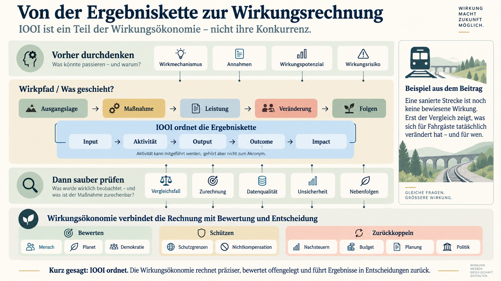

In diesem Beitrag: IOOI, Modellrechnung und Methodik
- Der konkrete Bezug zum Aktionsplan
- Vier Fragen, noch keine fertige Rechnung
- Auch das Regierungsmodell sieht Steuerung vor
- Präzision beginnt beim eingesetzten Geld
- Vier Minuten beobachtet, drei Minuten als Beitrag geschätzt
- Drei Minuten für wen - und auf wessen Kosten?
- Eine vollständige Rechnung braucht dieselbe Zeitbasis
- Eine positive Zeitbilanz ist noch keine positive Netto-Wirkung
- Transformation liegt nicht hinter dem letzten Kästchen
- Demokratie: Ziele benennen, Wirkungen prüfen
- Auch Kommunikation hat einen Wirkpfad
- IOOI innerhalb der Wirkungsökonomie
- Meine wirkungsökonomische Perspektive
- Methodischer Anhang: So bleibt die IOOI-Rechnung nachvollziehbar
- 1. Vor der Berechnung: eine gemeinsame Bezugsbasis
- 2. Drei Vergleiche getrennt berechnen
- 3. Das Gegenfaktum mit einem passenden Design begründen
- 4. Aggregation und Lebenszyklus offenhalten
- 5. Keine WÖk-Gesamtzahl aus unvollständigen Teilgrößen
- 6. Ergebnis, Unsicherheit und Entscheidung verbinden
- 7. Kommunikations- und Sachwirkung getrennt prüfen
- Quellen und Nachweise
Geld ausgeben, Gleise erneuern, Reisezeit gewinnen: Das sind drei verschiedene Dinge. IOOI hilft, sie auseinanderzuhalten. Die Wirkungsökonomie (WÖk) kann diese Ergebniskette nutzen. Ihr Anspruch beginnt schon bei der Rechnung: Was hat sich tatsächlich verändert, welcher Anteil geht auf die Maßnahme zurück, und für wen ist das eine Verbesserung?
Stellen wir uns eine Pendlerin vor, deren Zug regelmäßig Zeit verliert. Ein Streckenabschnitt wird saniert. Monate später ist die Baustelle verschwunden. Für die Pendlerin bleibt die entscheidende Frage: Komme ich jetzt verlässlicher an?
Die abgeschlossene Baumaßnahme und die Veränderung ihres Alltags sind nicht dasselbe. IOOI ordnet diesen Zusammenhang mit vier Begriffen: Input, Output, Outcome und Impact. Gemeint sind eingesetzte Ressourcen, erbrachte Leistungen, Veränderungen bei Betroffenen und weiterreichende Folgen. [3, 4]
Der konkrete Bezug zum Aktionsplan
Am 30. September 2026 hat das Bundeskabinett den Aktionsplan „Nachhaltigkeit für ein modernes und zukunftsfähiges Deutschland“ mit 20 Missionen beschlossen. [1] Auf den Seiten 9 und 10 beschreibt er für die Bundessäule des Sondervermögens Infrastruktur und Klimaneutralität ausdrücklich Input, Output, Outcome und Impact. Als Output nennt er realisierte Baumaßnahmen, als Outcome die „Reduzierung von Fahrtzeitverlust“. Das Kürzel IOOI selbst steht dort nicht. [2]
Die Bahnsanierung in diesem Beitrag ist ein daraus entwickelter Erklärfall, kein im Plan benanntes Einzelprojekt. Sämtliche nachfolgenden Zahlen sind frei gewählte Demonstrationswerte. Sie sagen nichts über den Erfolg einer tatsächlichen Baumaßnahme oder des Sondervermögens aus.
Vier Fragen, noch keine fertige Rechnung
Input fragt: Was setzen wir ein? In unserem Beispiel wären das Geld, Arbeitszeit, Material und Planungskapazität. Die Bauarbeiten sind die Aktivität. Sie können zwischen Input und Output gesondert dargestellt werden, sind aber kein fünfter Buchstabe im Kürzel. Output fragt: Was wurde bereitgestellt? Etwa ein erneuerter und abgenommener Streckenabschnitt. [3, 5]
Outcome fragt: Was verändert sich für die Menschen oder das betrachtete System? Hier wären das weniger verlorene Reisezeit und zuverlässigere Anschlüsse. Impact betrifft weiterreichende Folgen, etwa dauerhaft veränderte Erreichbarkeit oder Verkehrsmittelwahl. Ob diese Folgen eintreten, wird nicht dadurch bewiesen, dass sie im letzten Kästchen stehen.
IOOI ist eine Ordnungshilfe, keine allgemeingültige Rechenformel. Welche Messverfahren, Vergleichsgruppen und Zeiträume eine Anwendung braucht, muss für den jeweiligen Fall festgelegt werden. Etablierte Wirkungslogiken verbinden die Kette deshalb mit Annahmen, Kontext und Evaluation. [3, 5]
Der Vergleich in diesem Beitrag lautet daher nicht: bisheriges IOOI gegen WÖk. Er lautet: eine bloße Aufstellung von Mitteln, Leistungen und Zielerreichung gegenüber einer ausgearbeiteten Wirkungsrechnung. Die WÖk nutzt dabei bestehende Fachmethoden und verbindet sie mit ihrem eigenen Bewertungs-, Schutz- und Entscheidungsrahmen. [8]
Auch das Regierungsmodell sieht Steuerung vor
Der Aktionsplan sieht vor, erreichte Indikatorwerte mit Zielwerten zu vergleichen und die Ergebnisse in einer Fortschritts- und Wirkungskennzahl, kurz FWK, zusammenzuführen. Je nach Investitionsphase werden die Ebenen unterschiedlich gewichtet. Hinzu kommen vorausschauende Meilensteine und fortlaufendes Monitoring. [2]
Das Bundesfinanzministerium erläutert die FWK als Zielerreichung im Kontext der Investitionsphase. Seine Methodenerläuterungen berücksichtigen auch qualitative Impact-Angaben und die Schwierigkeit kausaler Zurechnung. Die Informationen sollen ausdrücklich Nachsteuerung unterstützen. Der bestehende Ansatz besteht also nicht nur aus vier Kästchen und einem Bericht. [6, 10]
Entscheidend ist, was die jeweilige Zahl aussagt. Planungsfortschritt, Zielannäherung, kausaler Beitrag und gesellschaftliche Gesamtbewertung sind verschiedene Aussagen. Eine phasenbezogene Kennzahl kann Fortschritt anzeigen. Ihr Wert allein sagt aber noch nicht, wie viel zusätzliche Reisezeit gewonnen wurde oder ob relevante Schutzgrenzen eingehalten sind.
Der wirkungsökonomische Anspruch beginnt bereits bei der Rechnung. Was wurde gebaut? Was hat sich danach verändert? Welcher Anteil lässt sich dem Vorhaben zurechnen? Anschließend ist zu prüfen, ob das Ergebnis auch unter Berücksichtigung von Nachteilen für andere Menschen, Umweltfolgen und Schutzgrenzen eine Verbesserung darstellt. Die WÖk ist ein Wirtschafts- und Gesellschaftsmodell, das solche Erkenntnisse zum Maßstab für Entscheidungen machen will. IOOI kann darin die Ergebniskette ordnen; es beantwortet nicht allein alle diese Fragen. [8]
Präzision beginnt beim eingesetzten Geld
Nehmen wir für die Modellstrecke 100 Millionen Euro zusätzliche Bauausgaben und 100 erneuerte Kilometer an. Dann lassen sich eine Million Euro je Kilometer berechnen. Das beschreibt die Baukosten je Leistungseinheit. Es ist noch keine Rechnung darüber, was sich für Fahrgäste verändert.
Eine wirkungsökonomische Auswertung hält deshalb Mittelbindung, tatsächliche Zahlung und Ressourcenverbrauch auseinander. Für einen Kostenvergleich braucht sie dieselbe Preisbasis, denselben Zeitraum und denselben Vergleichsfall. Spätere Betriebs- und Instandhaltungskosten verschwinden nicht dadurch, dass das Baukonto abgeschlossen ist. Auch Emissionen oder Belastungen während der Bauphase können bereits Wirkung sein, obwohl der erhoffte Verkehrsnutzen erst später eintritt. [8]
Beim Output zählt nicht nur die Menge. Welche Abschnitte wurden erneuert, mit welcher Funktion und Qualität, und welcher Engpass wurde tatsächlich beseitigt? Hundert Kilometer Gleis sind keine homogene Wirkungseinheit. Erst der begründete Zusammenhang zur Nutzung erklärt, weshalb daraus eine Veränderung entstehen könnte.
Der mögliche Mechanismus lautet hier: Ein technischer Engpass entfällt, Züge verlieren weniger Zeit, Anschlüsse werden verlässlicher. Aber vielleicht liegt der nächste Engpass wenige Kilometer weiter. Oder Fahrzeuge und Personal fehlen. Diese Zusammenhänge und Bedingungen müssen geprüft werden. Eine solche Wirkungslogik lässt sich mit einer Theory of Change ausarbeiten. [3, 5]
Vier Minuten beobachtet, drei Minuten als Beitrag geschätzt
MODELLRECHNUNG: Alle folgenden Zahlen sind erfunden. Die Rechnungen zeigen methodische Unterschiede, keine Ergebnisse der Bundesregierung oder der Bahn.
Wir betrachten eine feste, vergleichbar zusammengesetzte Gruppe von Personenfahrten. Vor der Sanierung gehen durchschnittlich zwölf Minuten je Fahrt verloren. Nach der Sanierung sind es acht. Das vorher festgelegte Zustandsziel lautet sechs Minuten. Eine einfache Ausgangslagenrechnung ergibt:
Beobachtete Verbesserung: 12 - 8 = 4 Minuten je Fahrt
Annäherung an das Zustandsziel: (12 - 8) ÷ (12 - 6) = 66,7 %
Diese selbst gewählte Zielannäherung ist keine Rekonstruktion der amtlichen FWK. Sie beantwortet: Welcher Teil der angestrebten Verbesserung gegenüber dem Ausgangszustand wurde beobachtet? Sie beantwortet noch nicht: Welcher Teil wurde durch die Sanierung verursacht?
Dafür betrachten wir zusätzlich einen geeigneten, nicht von der Sanierung beeinflussten Vergleichskorridor. Dort sinkt der Zeitverlust im selben Zeitraum von zehn auf neun Minuten. Unter der Annahme, dass sich beide Korridore ohne Sanierung ähnlich entwickelt hätten, ergibt sich auf unserer Strecke ein Vergleichswert von elf statt zwölf Minuten. Der geschätzte Sanierungsbeitrag beträgt dann:
Zusätzlicher Zeitgewinn: (12 - 8) - (10 - 9) = 3 Minuten je Fahrt
Vier Minuten wurden beobachtet. Drei Minuten werden unter den genannten Annahmen der Maßnahme zugerechnet. Die eine Minute Unterschied ist kein pauschaler Sicherheitsabschlag, sondern der im Beispiel geschätzte Vergleichstrend.
Das Verfahren heißt Differenz-von-Differenzen und gehört zur etablierten Kausalanalyse. Es setzt unter anderem voraus, dass sich beide Korridore ohne Eingriff ähnlich entwickelt hätten und andere Veränderungen den Vergleich nicht verzerren. Eine einzelne Vergleichsstrecke und zwei Durchschnittswerte beweisen das noch nicht. [11]
Hier wird die Rechnung schärfer als ein bloßer Vorher-nachher-Bericht: Sie hält Beobachtung und Zurechnung getrennt. Fehlt ein belastbarer Vergleich, bleibt die Zurechnung offen oder wird als begründeter Beitrag beschrieben. Eine erfundene Prozentgenauigkeit ersetzt keinen Nachweis. [8]
Drei Minuten weniger Zeitverlust im Durchschnitt beantworten allerdings noch nicht die ganze Frage unserer Pendlerin. Ob die Verbindung auch verlässlicher geworden ist, müsste zusätzlich an Ausfällen, Anschlussverlusten und der Verteilung der Verspätungen geprüft werden. Die Messgröße muss zu der Frage passen, die wir beantworten wollen.
Drei Minuten für wen - und auf wessen Kosten?
Nehmen wir weiter an, die drei Minuten gelten für zwei Millionen vergleichbare Personenfahrten im Jahr. Dann ergibt sich:
2.000.000 Fahrten × 3 Minuten ÷ 60 = 100.000 Personenstunden pro Jahr
Das sind nicht zwei Millionen verschiedene Menschen. Eine Pendlerin kann viele dieser Fahrten machen. Die Rechnung gilt nur für die betrachtete Population und die unterstellte Fahrtenzahl. Neue Nachfrage, ausgefallene Fahrten oder veränderte Streckenlängen müssten gesondert berücksichtigt werden. Ein Durchschnitt darf nicht ungeprüft auf alle übertragen werden.
Nun nehmen wir eine mögliche Nebenfolge hinzu: Durch eine mit der Maßnahme verbundene Fahrplanänderung verlieren Fahrgäste auf einer anderen Verbindung Zeit. Für weitere 600.000 Personenfahrten entstehen gegenüber ihrem eigenen Vergleichsverlauf zwei Minuten zusätzlicher Zeitverlust. Diese Fahrten überschneiden sich nicht mit den zuvor gezählten; die Verbindung ist auch nicht unser Vergleichskorridor. Daraus ergeben sich jährlich 20.000 verlorene Personenstunden.
Zeitbilanz im erweiterten Betrachtungsraum: 100.000 - 20.000 = 80.000 Stunden
Die Bilanz und ihre beiden Bestandteile gehören nebeneinander. Die Menschen mit längeren Fahrten sind nicht dadurch unbetroffen, dass die Summe positiv bleibt. Deshalb müssen der betrachtete Raum und die Verteilung sichtbar sein. Auch das etablierte Impact Management unterscheidet Reichweite, Veränderungsstärke, Dauer und Beitrag. [7, 8]
Außerdem ist der Vergleichsverlauf unsicher. Unterstellen wir statt einer Minute eine allgemeine Verbesserung von 0,5 bis 1,5 Minuten, liegt der zugerechnete Gewinn bei 2,5 bis 3,5 Minuten. Bei sonst gleichen Annahmen ergibt das nach Abzug der Nebenfolge ungefähr 63.000 bis 97.000 gewonnene Stunden jährlich. Das ist eine Sensitivitätsbandbreite, kein statistisches Konfidenzintervall. Die Zahlen werden nicht genauer, nur weil wir mehr Nachkommastellen drucken.
Eine vollständige Rechnung braucht dieselbe Zeitbasis
Auch 80.000 Stunden pro Jahr sind noch kein vollständiger Lebenszyklus. Unterstellen wir für das Beispiel zehn Betriebsjahre mit jeweils dieser Bilanz. Die Bauphase habe gegenüber dem Vergleichsfall einmalig 80.000 zusätzliche Personenstunden gekostet. Dann bleiben über diesen ausdrücklich begrenzten Zeitraum, ohne Abzinsung:
10 × 80.000 - 80.000 = 720.000 gewonnene Personenstunden
Für denselben Zeitraum setzen wir 120 Millionen Euro zusätzliche Kosten gegenüber dem Vergleichsfall an: 100 Millionen für den Bau und 20 Millionen für weiteren Betrieb und Instandhaltung. Alle Beträge beziehen sich auf dieselbe Preisbasis; Restwerte sind hier vereinfachend nicht berücksichtigt.
120.000.000 Euro ÷ 720.000 Stunden ≈ 167 Euro je gewonnener Stunde
Damit berechnen wir zeitbezogene Kosteneffektivität: Welche zusätzlichen Kosten stehen einer zusätzlich gewonnenen Stunde gegenüber? Das ist weder eine finanzielle Rendite noch ein vollständiges gesellschaftliches Urteil. Für eine reale Wirtschaftlichkeitsuntersuchung wären unter anderem Laufzeit, Restwerte, Zahlungszeitpunkte, Abzinsung sowie weitere Nutzen- und Kostenarten zu bearbeiten. Kosten und Wirkungen müssen sich dabei auf denselben Vergleichsfall beziehen.
Hier zeigt sich, was „präziser rechnen“ praktisch bedeutet: keine Baukosten durch einen einzelnen Jahresnutzen teilen und das Ergebnis als Lebenszyklusurteil ausgeben. Keine eingesparten Stunden und deren Geldbewertung doppelt addieren. Und keinen bereits berücksichtigten Vergleichstrend ein zweites Mal als Zusätzlichkeitsabschlag abziehen.
Eine positive Zeitbilanz ist noch keine positive Netto-Wirkung
Innerhalb derselben Einheit dürfen wir in diesem Beispiel Stunden zusammenführen. Nicht zulässig wäre es, daneben Tonnen CO₂, Euro und frei vergebene Demokratiepunkte zu addieren und das Ergebnis als objektive Gesamtwirkung auszugeben. Jede Größe braucht ihre Einheit, Grenze, Herkunft und Bewertungsregel. [8]
Für Klimafolgen wären etwa die Emissionen von Bau, Betrieb und tatsächlich verändertem Verkehr gegenüber einem passenden Vergleichsfall zu untersuchen. Mehr Bahnfahrten belegen allein noch keine bestimmte Menge vermiedener Autofahrten. Für Teilhabe zählen Erreichbarkeit, Kosten und Barrierefreiheit. Beim demokratischen Bezugsrahmen geht es beispielsweise um Beteiligung, nachvollziehbare Verfahren und Überprüfbarkeit. Deren Vorhandensein ist nicht automatisch ein nachgewiesener Demokratiegewinn der Sanierung. [8]
Die WÖk ordnet die Befunde an ihrem offengelegten Rahmen Mensch, Planet und Demokratie ein. Ihr Nichtkompensationsprinzip begrenzt die Verrechnung schwerer oder grenzverletzender Schäden. Eine mögliche Bewertungslogik dafür ist die Reverse Merit Order: Ein materiell kritisches Feld oder eine verletzte Schutzgrenze begrenzt das Gesamturteil. Nicht jedes schwache Detail blockiert automatisch. Ziele, geltende Rechte und begründete Schutzgrenzen müssen erkennbar bleiben. [8]
Für unseren Erklärfall heißt das: Die Zeitrechnung darf ausgewiesen werden. Ohne Umwelt-, Verteilungs- und Schutzprüfung trägt sie aber kein Gesamturteil über positive WÖk-Netto-Wirkung. Fehlende Daten werden als offen bezeichnet, nicht als Nullschaden. Ein Gewicht oder Schwellenwert ist eine offenzulegende Bewertungsentscheidung, keine aus dem IOOI-Kürzel ablesbare Naturkonstante.
Transformation liegt nicht hinter dem letzten Kästchen
Die nächste Frage lautet: Ändert sich nur ein Streckenabschnitt oder auch, wie künftig geplant und betrieben wird? Werden Wartungsregeln, technische Standards oder die Abstimmung zwischen Infrastruktur und Fahrplan dauerhaft verändert? Solche strukturellen Veränderungen untersucht die WÖk als Transformationswirkung. Sie sind nicht automatisch positiv. [8]
Transformation ist keine zusätzliche Pflichtstufe hinter Impact. Das OECD-Glossar berücksichtigt im Impact-Begriff ausdrücklich potenziell transformative Effekte. [5] Die WÖk prüft strukturelle Veränderungen gesondert: Welche Bedingungen künftiger Entscheidungen ändern sich, mit welchem Beitrag der Maßnahme und welchen Folgen? Dafür genügt weder eine Absichtserklärung noch ein frei gewählter Multiplikator auf die errechneten Zeitgewinne.
Auch die Stabilität eines Ergebnisses bleibt eine eigene Frage. Funktioniert die Verbindung bei einer Störung weiter? Wie schnell erholt sie sich? Wird eine andere Strecke stärker belastet? Prüfgrößen wären etwa Ausfälle, Wiederherstellungszeiten oder verbleibende nutzbare Kapazität. Solche Angaben ergänzen den Durchschnitt der gewonnenen Minuten; sie gehen nicht darin auf.


Demokratie: Ziele benennen, Wirkungen prüfen
Auch für Demokratie und Öffentlichkeit ist eine erbrachte Leistung noch kein Wirkungsnachweis. Kapitel IV des Aktionsplans behandelt Demokratie und Rechtsstaatlichkeit. Die internationale Mission nennt Projekte zur Aufklärung von Desinformationskampagnen und verweist unter anderem auf SDG 16. Die ausführliche Vier-Ebenen-Messung auf den Seiten 9 und 10 gehört dagegen zur SVIK-Mission; eine identische Ausgestaltung für alle Demokratie-Missionen lässt sich daraus nicht ableiten. [2]
Demokratie ist bereits in Absatz 9 der Agenda 2030 ausdrücklich benannt. SDG 16 enthält konkrete Ziele: Rechtsstaatlichkeit und gleichen Zugang zur Justiz in 16.3, transparente und rechenschaftspflichtige Institutionen in 16.6, inklusive und repräsentative Entscheidungen in 16.7 sowie Informationszugang und Grundfreiheiten in 16.10. Indikator 16.10.1 erfasst unter anderem schwere Übergriffe auf Journalistinnen und Journalisten. [12, 13]
SDG+ setzt deshalb nicht bei einer vollständigen Leerstelle an. Es ist die WÖk-eigene Konkretisierung und Ergänzung des SDG-Referenzrahmens für demokratische, mediale, institutionelle, soziale und digitale Wirkungsbedingungen. Es knüpft an vorhandene UN-Ziele an und ist keine offizielle UN-Kategorie. Dabei muss jeweils erkennbar sein: Was wird übernommen, was genauer ausgearbeitet, und welche zusätzliche Anforderung formuliert die WÖk? Medienqualität, Diskursfähigkeit und digitale Selbstbestimmung sind solche Prüffelder. Ob eine konkrete Maßnahme sie tatsächlich stärkt, muss gesondert untersucht werden. [8, Abschnitt 4]
Auch Kommunikation hat einen Wirkpfad
Nehmen wir als zweiten fiktiven Erklärfall eine Initiative, die irreführende Informationen prüft. Sie knüpft didaktisch an die genannte Mission an, ist aber kein Bericht über ein konkretes Regierungsprojekt. Ein Team bekommt Zeit und Geld: Input. Es erstellt Erklärbeiträge und bietet Schulungen an: Output. Prüfen Menschen anschließend Behauptungen zuverlässiger, wäre das eine Outcome-Frage. Verändern sich dadurch längerfristig öffentliche Kontroll- und Beteiligungsmöglichkeiten, wäre das eine mögliche Impact-Frage. Auch diese Ergebniskette lässt sich mit IOOI ordnen. [3, 5]
IOOI schließt Kommunikationswirkung also nicht aus. Für ihre Untersuchung gibt es zudem etablierte Fachverfahren. Das AMEC-Rahmenwerk unterscheidet beispielsweise veröffentlichte und rezipierte Inhalte, Publikumsreaktionen, Veränderungen von Wissen oder Vertrauen und weiterreichende Folgen für Organisationen, Betroffene und Gesellschaft. An diese Facharbeit kann die WÖk anschließen. [14]
Innerhalb dieser Kette ist genau hinzusehen: Wer hatte tatsächlich Kontakt mit dem Beitrag? Was wurde verstanden? Was hat sich verändert, und welchen Anteil hatte der Beitrag daran? Tonalität, Wiederholung, Deutungsrahmen und Verbreitungswege sind mögliche Einflussfaktoren, kein Beweis für Erfolg oder Schaden. Ein Aufruf belegt keine veränderte Überzeugung. Belegte Veränderungen von Wissen oder Einstellungen können dagegen bereits Wirkung sein; sie müssen nicht erst in ein Gesetz oder eine sichtbare Handlung münden. [3, 8, 14]
Die WÖk-Bewertung fragt darüber hinaus: Können Menschen Informationen eigenständig prüfen, widersprechen und sich beteiligen? Welche Nebenfolgen und Schutzfragen entstehen? Zustimmung zum Absender ist kein Demokratieindikator. Auch mehr Vertrauen allein trägt kein demokratisches Gesamturteil. Eine zutreffende Recherche könnte einen Missstand offenlegen und zugleich das Vertrauen in die betroffene Institution verringern. Informationsqualität, Vertrauen und Kontrollmöglichkeiten wären in diesem gedachten Fall getrennt zu untersuchen. [8, Abschnitte 4 und 12.3]
Zurück zur Bahn: Die Sanierung und die Kommunikation darüber erhalten getrennte, miteinander verbundene Wirkungspfade. Gewonnene Reisezeit belegt keinen Vertrauensgewinn. Eine verständliche Baustelleninformation belegt keine bessere Zugverbindung. Passende Daten müssen zeigen, ob und wie beides zusammenwirkt. Aufrufe, Einstellungen und Personenstunden werden nicht zu einer scheinbar einheitlichen Wirkungssumme addiert. Aus den Befunden können unterschiedliche Aufgaben folgen: den Fahrplan anpassen, eine Information korrigieren oder Rückmeldungen in die Planung aufnehmen. [8]
IOOI innerhalb der Wirkungsökonomie
IOOI kann innerhalb der WÖk Ressourcen, Leistungen, Veränderungen und weiterreichende Folgen als Ergebniskette ordnen. Der Ausschnitt betrifft Fragen und Funktionen, nicht unbedingt einen kurzen Abschnitt auf einer Zeitachse. Beide Ansätze können vor eingetretener Wirkung ansetzen. Potenziale beschreiben mögliche Folgen. Mechanismen erklären Verbindungen. Evidenz prüft Behauptungen. Bewertung ordnet sie ein. Das sind keine Stationen, die ein Zug nacheinander durchfährt. [8]
Der WÖk-Anspruch betrifft deshalb sowohl die Kästchen als auch die Pfeile: Was wird erfasst? Gegen welchen Zustand wird verglichen? Welche Einheit wird gerechnet? Was lässt sich zurechnen? Und welche Nachteile oder Wissenslücken bleiben sichtbar? Die Architektur verbindet diese Prüfung mit Schutzregeln, Verantwortlichkeiten und Rückkopplung in Entscheidungen. Bei der Bahn betrifft das etwa Wartung, Fahrplan und Budget. Im größeren Modell können auch Beschaffung, Kapitalzugang, Preise oder steuerliche Regeln betroffen sein. [8]
IOOI liefert dabei die Struktur, fachliche Evaluation unter anderem Vergleichsdesigns und Kausalanalyse. Die WÖk führt diese Arbeit in ihrem Referenz-, Schutz- und Entscheidungsrahmen zusammen. Auch andere Ansätze verbinden Analyse und Lernen; PHINEO beschreibt dafür beispielsweise ein eigenes Wirkungsrad. Der Unterschied muss deshalb am konkreten Prüf- und Entscheidungsumfang gezeigt werden, nicht an einem vermeintlichen Alleinstellungsmerkmal. [8, 9]
Für unseren Beispielfall hieße das: Vorab festlegen, wer Abweichungen prüft und wie Ergebnisse in die nächste Entscheidung eingehen. Bleibt der Zeitgewinn trotz fertiger Gleise aus, wird nach dem tatsächlichen Engpass gesucht. Entstehen Nachteile für andere Fahrgäste, wird der Fahrplan überprüft. Nach einer Anpassung wird erneut beobachtet. Eine Kennzahl ersetzt diese Arbeit nicht. Ob die Anwendung praktisch bessere Entscheidungen ermöglicht, muss sich im jeweiligen Fall zeigen.
Meine wirkungsökonomische Perspektive
Ich verstehe IOOI nicht als Konkurrenz zur Wirkungsökonomie. Es ist eine einsetzbare Teilmethode innerhalb eines größeren Modells. Mein Anspruch ist zweifach: Schon die Ergebniskette braucht passende Daten, einen begründeten Vergleich und eine nachvollziehbare Rechnung. Und ihre Ergebnisse müssen mit einer offenen Bewertung, Schutzgrenzen und überprüfbaren Entscheidungsfolgen verbunden werden.
Das ist mehr als ein zusätzlicher Rahmen um unveränderte Zahlen. Im Erklärfall werden aus vier beobachteten Minuten drei geschätzte zusätzliche Minuten. Aus einem Jahresgewinn wird eine Bilanz mit Nebenfolgen und Bauphase. Aus dieser Teilbilanz wird gerade nicht vorschnell ein Gesamturteil. Die Präzision liegt in den Unterscheidungen und in der belegbaren Herleitung, nicht in einer neuen Wunderformel.
IOOI ordnet die Ergebniskette. Eine wirkungsökonomische Anwendung präzisiert ihre Messung und Rechnung. Die WÖk-Architektur verbindet das Ergebnis mit Bewertung, Schutz und Rückkopplung.
Für unsere Pendlerin bleibt die Frage einfach: Komme ich verlässlich an? Die Bauabnahme sagt, ob die Strecke fertig ist. Die Wirkungsrechnung untersucht, was sich zusätzlich verändert hat. Die Bewertung klärt, für wen das unter welchen Bedingungen eine Verbesserung ist. Und die Rückkopplung hält fest, wer daraus welche Konsequenz zieht. Erst an dieser Verbindung muss sich wirkungsorientierte Politik messen lassen.
METHODIK ZUM BEITRAG
Methodischer Anhang: So bleibt die IOOI-Rechnung nachvollziehbar
Die folgenden Regeln konkretisieren die WÖk-Anwendung für diesen Beitrag. Sie sind weder eine neue universelle IOOI-Formel noch eine amtliche Berechnungsvorschrift. Das Zahlenbeispiel bleibt vollständig fiktiv.
1. Vor der Berechnung: eine gemeinsame Bezugsbasis
Festzulegen sind Gegenstand, betroffene Population, Vergleichsfall, Zeiträume, Einheiten und Datenquellen. Im Beispiel wird der durchschnittliche Zeitverlust je Personenfahrt gegenüber einer unverändert definierten Referenzverbindung betrachtet. Ausfälle, verpasste Anschlüsse, Fahrplanverlängerungen und veränderte Fahrgastzusammensetzung dürfen die Messung nicht unbemerkt verschieben. Werden sie nicht erfasst, ist der Aussagebereich enger. Verlässlichkeit braucht zusätzliche Kennwerte, etwa Ausfall- und Anschlussverlustquoten sowie die Verteilung der Verspätungen. Systemgrenzen und Ausschlüsse werden dokumentiert.
2. Drei Vergleiche getrennt berechnen
Für eine Größe, bei der eine Abnahme die betrachtete Verbesserung bedeutet, seien B der Ausgangswert, Y der beobachtete Wert, Z der vorher festgelegte Zielwert und C der begründet geschätzte Wert ohne Maßnahme. Dann gilt:
Beobachtete Veränderung in Verbesserungsrichtung = B - Y
Baseline-bezogene Zielannäherung = (B - Y) ÷ (B - Z)
Geschätzter zusätzlicher Effekt = C - Y
Im Beispiel: B = 12, Y = 8, Z = 6 und C = 11 Minuten. Die Ergebnisse lauten 4 Minuten, 66,7 Prozent und 3 Minuten. Die Zielannäherung ist bei B = Z nicht definiert; bei Schwellen-, Bestands- oder nichtlinearen Zielen braucht es eine andere begründete Regel. Sie ist weder ein Anteil der gesamten gesellschaftlichen Wirkung noch automatisch ein Kausalitätsmaß.
3. Das Gegenfaktum mit einem passenden Design begründen
Im Beispiel wird C mit einem Differenz-von-Differenzen-Vergleich geschätzt. In realen Daten sind längere Vorverläufe, Gruppenzusammensetzung, zusätzliche Eingriffe, Übertragungseffekte und statistische Unsicherheit zu untersuchen. Die Unabhängigkeit vieler Fahrgastbeobachtungen darf nicht unterstellt werden, wenn der Eingriff auf Korridorebene erfolgt. Welches Design passt, ist eine Fachentscheidung. Bei unzureichender Grundlage wird ein plausibler Beitrag beschrieben, keine scheinbar exakte Verursachungsquote. [11]
4. Aggregation und Lebenszyklus offenhalten
Eine zeitbezogene Bilanz kann über nicht überlappende Gruppen und Zeiträume die Zahl der Personenfahrten mit dem jeweils geschätzten Effekt multiplizieren und durch 60 teilen. Zeitverluste erhalten ein negatives Vorzeichen. Die Übertragung auf künftige Jahre ist eine Modellannahme, kein bereits beobachteter Dauererfolg. Bauphase und Nebenfolgen werden nur einmal erfasst. Im Beispiel sind die zusätzlichen 20.000 Verluststunden jährlich und 80.000 Baustunden bereits berücksichtigt.
Für eine diskontierte Kosteneffektivitätsrechnung sind zusätzliche Kosten gegenüber demselben Vergleichsfall und zeitbezogene Effekte je Periode zu dokumentieren. Verwendete Diskontsätze, Preisbasis, Laufzeit und Restwerte müssen sichtbar sein. Die Beispielrechnung setzt zur Veranschaulichung keine Abzinsung und keinen Restwert an; sie ist keine vollständige Nutzen-Kosten-Analyse.
5. Keine WÖk-Gesamtzahl aus unvollständigen Teilgrößen
Stunden, Treibhausgase, Zugänglichkeit und Schutzfragen werden zunächst getrennt ausgewiesen. Eine mögliche monetäre Bewertung braucht begründete Ansätze; dieselbe Wirkung darf danach nicht nochmals in Originaleinheiten als zusätzlicher Nutzen mitgezählt werden. Eine Normierung auf Punkte schafft für sich keine Vergleichbarkeit. Ein NWI, IOI oder T-SROI wird hier ausdrücklich nicht berechnet: Dafür reichen die Zeitdaten und Annahmen nicht. Die einfache Kosten-je-Stunde-Relation ist kein Ersatz für diese WÖk-Instrumente. [8]
6. Ergebnis, Unsicherheit und Entscheidung verbinden
Der Ergebnisdatensatz hält mindestens Messwert, Vergleichsfall, zugerechneten Effekt, Methode, Unsicherheit, Betroffenengruppe, Zeitraum, Quellenstand und Prüfung fest. Daneben stehen Zielannäherung, Verteilung, Schutzstatus und offene Fragen. Bei niedriger Evidenz wird nicht automatisch eine niedrige Wirkung behauptet. Ein unbekannter Effekt ist keine Null. Verantwortliche legen fest, welche zusätzlichen Daten oder überprüfbaren Anpassungen aus dem Befund folgen. [8]
7. Kommunikations- und Sachwirkung getrennt prüfen
Bei Kommunikationsanalysen werden mindestens Inhalt, tatsächlicher Kontakt, Publikum, Zeitraum und Vergleichsfall benannt. Reichweite, Verständnis, Einstellungen, Verhalten und institutionelle Veränderungen sind verschiedene Größen. Eine beobachtete Einstellungsänderung und deren Zurechnung zum Beitrag bleiben getrennte Aussagen. Mögliche Wechselwirkungen mit dem Ereignis selbst werden beschrieben; derselbe Effekt wird nicht zweimal als Sach- und Kommunikationswirkung angerechnet. Demokratische Bewertung bezieht sich auf ausgewiesene Rechte, Teilhabe und Korrekturmöglichkeiten, nicht auf Zustimmung zu einem Absender. Die konkreten Prüfgrößen sind begründet festzulegen, keine fertige Messvorschrift aus dem Kürzel SDG+. [8, 14]
Quellen und Nachweise
Die Ziffern im Text verweisen auf diese Quellen. Öffentliche Onlinequellen geprüft am 1. Oktober 2026. Die Modellrechnung ist eine eigene didaktische Herleitung; ihre Zahlen sind keine Messdaten.
[1] Bundesregierung (30.09.2026): Mehr Ideen für mehr Nachhaltigkeit. Mitteilung zum Kabinettsbeschluss; Datum und Zahl der Missionen. Originalquelle
[2] Bundesregierung (30.09.2026): Aktionsplan „Nachhaltigkeit für ein modernes und zukunftsfähiges Deutschland“, S. 9-10 und 21-23. Beschlossene Fassung; vier IOOI-Ebenen und Monitoring für die SVIK-Bundessäule sowie Demokratie-Missionen und Desinformationsbekämpfung. Originalquelle
[3] PHINEO: Grundbegriffe der Wirkungsorientierung. Abschnitte zu IOOI, Wirkungskette, Wirkungslogik und Theory of Change. Originalquelle
[4] Bertelsmann Stiftung: Die iooi-Methode. Planung, Messung und strategische Steuerung gesellschaftlichen Unternehmensengagements. Originalquelle
[5] OECD (2023): Glossary of Key Terms in Evaluation and Results-Based Management for Sustainable Development, Second Edition. Besonders gedruckte S. 36 (Impact), 53-54 (Results Chain/Framework) und 60-61 (Theory of Change/Transformative Effects). DOI: 10.1787/632da462-en-fr-es. Originalquelle
[6] Bundesministerium der Finanzen (21.07.2026): Monitoring Sondervermögen Infrastruktur und Klimaneutralität: Transparenz, Wirkung und Steuerung. Monatsbericht Juli 2026; Methodik und Nachsteuerung. Originalquelle
[7] Impact Frontiers: Five Dimensions of Impact. Insbesondere What, Who, How Much, Contribution und Risk. Originalquelle
[8] Weber, Natalie (2026): Führender Begriffsleitfaden der Wirkungsökonomie, Version 1.7, 21.08.2026. Insbesondere Abschnitte 3 bis 7, 10.2 bis 10.10, 12.3 und 16.3. Interne Primärquelle für WÖk-Begriffe und Modellanforderungen; die SDG+-Präzisierung knüpft an Abschnitt 4.2 an. Die Anwendung und Rechnungen sind didaktische Konkretisierungen dieses Beitrags, kein empirischer Überlegenheitsnachweis. Originalquelle
[9] PHINEO: Vom Purpose zur Wirkung - ein Unternehmens-Guide. PHINEO-Wirkungsrad zur Planung, Erfassung, Steuerung und laufenden Verbesserung. Originalquelle
[10] Bundesministerium der Finanzen: Dashboard Bundessäule, Erklärungen zum Monitoring und zu den Daten. Phasenbezug, FWK und Grenzen kausaler Zurechnung auf Impact-Ebene. Originalquelle
[11] Feng, Shuo; Ganguli, Ishani; Lee, Youjin; Poe, John; Ryan, Andrew; Bilinski, Alyssa (2024): Difference-in-Differences for Health Policy and Practice: A Review of Modern Methods. Preprint, arXiv:2408.04617. Methodenquelle für Annahmen und Grenzen des Vergleichsverfahrens, nicht für Verkehrswirkungen. Originalquelle
[12] Vereinte Nationen (2015): Transforming our world: the 2030 Agenda for Sustainable Development, Absatz 9. Ausdrücklicher Bezug auf Demokratie, gute Regierungsführung und Rechtsstaatlichkeit. Originalquelle
[13] UN DESA: Sustainable Development Goal 16, Targets and Indicators. Unterziele 16.3, 16.6, 16.7 und 16.10 sowie Indikator 16.10.1: Rechtsstaatlichkeit, Justizzugang, transparente Institutionen, Beteiligung, Informationszugang, Grundfreiheiten und Schutz des Journalismus. Originalquelle
[14] AMEC: Integrated Evaluation Framework, Supporting Material: Taxonomy, entwickelt von Jim Macnamara. Kommunikationsbezogene Inputs, Aktivitäten, Outputs, Outtakes, Outcomes und Impacts; Wirkungen auf Organisationen, Betroffene und Gesellschaft. Keine Gleichsetzung des AMEC-Rahmens mit dem IOOI-Grundschema. Originalquelle
Versionshinweis: Fassung 1.2 vom 1. Oktober 2026 präzisiert SDG+, verdeutlicht den WÖk-Anspruch innerhalb der Ergebniskette und unterscheidet durchschnittlichen Zeitgewinn von Verlässlichkeit. Alle Beispielwerte und Rechenschritte sind unverändert. Quellenstand und Formulierungen wurden überprüft; frühere Fassungen bleiben erhalten.